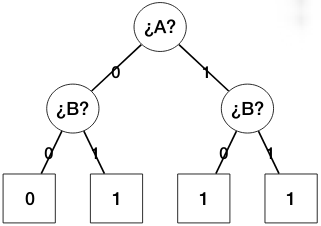
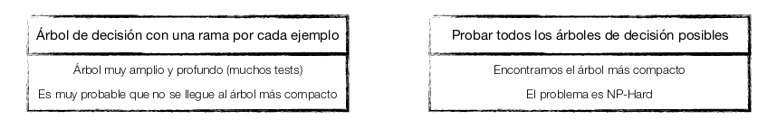
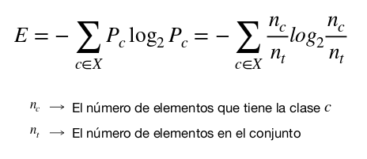
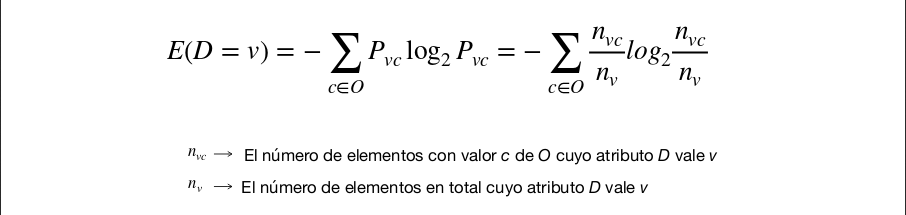
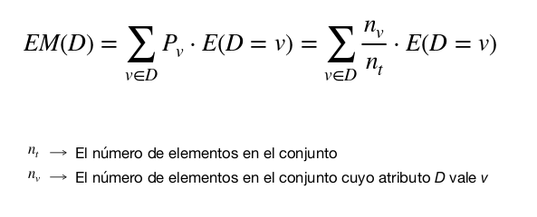
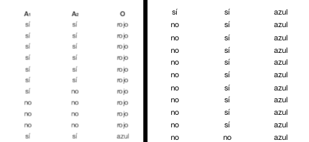

INTELIGENCIA ARTIFICIAL: T3, ÁRBOLES DE DECISIÓN.
DEFINICIONES:
- Árbol de decisiones: Representación de una secuencia de preguntas para llegar a una conclusión a partir de una premisa.

- Decisión: Test sobre un atributo, que deriva a unos u otros nodos dependiendo del valor.
- Resultado: Clasificación de un ejemplo dado tras seguir valores de los tests a los atributos.
Arboles de decisión:
Objetivo: Econtrar el árbol de decisión más compacto.
¿Cómo generear el mejor árbol de decisión a partie de un dataset?

Objetivo más asequible
Encontrar un árbol suficientemente compacto y suficientemente bueno clasificando.
Algoritmos de Generación:
Idea:
Elegir atributos que mejor partcionen los datos y separar por ellos.
Algoritmos:
- ID3: Aproximación Top-Down basada en la selección de atributos por entropía de Shannon
- C4.5: Mejora de ID3 con podas para atenuear el overfitting y soporte de varaibles continuas.
- Random Forest: Generación de árboles con selecciones aleatorias de subconjuntos de atributos.
- CART: Árboles binarios para la clasificación o regresión con soperte para variables continuas.
ID3: Iterative Dichotmizer Tree.
Fue desarrollado por Ross Quinlan en 1979 basa su funcionamiento en la entropía.
Sólo es válido para datos de valores discretos, no acepta datos imprecisos ni ausentes. Tampoco asgura la solución óptima.
Funcionamiento:
Dado un conjunto:
if(entropiaGlobal == 0 || atributosDivisibles == 0) EXIT- Seleccionar el mejor atributo para dividir la información.
- Crear tantos nodos como diferente valores tiene l atributo seleccionado. Cada nodo será el subconjunto donde el atributo toma el valor elegido, eliminando ese atributo de la tabla.
- Aplicar recusrsivamente el algoritmo sobro lso nodos resultantes.
Dado un Conjunto:
if(entropiaGlobal == 0 || atributosDivisibles == 0) EXIT- Calcular la entropía de todos los atributos del conjunto.
- Seleccionar el atributo que genere la menor entropía (La mayor ganancia de información).
- Crear tantos nodos cmo diferentes valores tenga el atributo seleccionado. Cada nodo será el subconjunto donde el atributo toma el valor elegido, eliminandose ese atribut de la tabla y construyendo una nueva tabla con las filas que tiene ese valor del atributo.
- Aplicar recursivamente el algoritmo sobre los nodos resultantes.
Code:
def ID3(C):
if entropía == 0:
return 0
else:
P = Lista de propiedades (columnas) de la tabla C
EM = EntropíaMedia(Pi) para cada Pi en P
PM = Propiedad de menor valor de EM
borrar columna PM de C
foreach V (valor) en PM:
Crear rama etiquetada con V
Crear tabla C’ con las filas de C en las que PM = V
Llamar recursivamente a ID3(C’)
end
end
Entropía de Shannon:
Cálculo de la entropía de un Conjunto:
La entropía de Shannon mide la incertidumbre de un conjunto de datos.
- Rango: [0,log2(n)] siendo n el número de valores posibles.
- Puede entenderse como el número de bits que hacen falta para identificar un elemento dentro de un conjunto.
-0 ~ Conjunto Homogéneo: Todos los elementos toman el mismo valor, no hace falta información para saber cuál es el elemento.
- log2(n) ~ Conjunto Equilibrado: Hace falta la máxima información posible para distinguir cuál es el elemento.
Cuanto más caótico sea el conjunto mayor será su entropía.

Representa cuánto pasa a valer la entropía de la tabla resultante al particionar un conjunto según los valores de un atributo.
Primero estudiaremos la entropía para un único valor v e una propiedad D (Decisora) con respecto a una variable objetivo O.

Tan solo tenemos que calcular la entropía del Subconjunto donde D = v

La entropía media de un atributo es la media ponderada de los subconjuntos para cada v ∈ D.
Casos Prácticos:
Dado el conjunto C:

IG(A)=E(total)−EM(A)
Cuanto menor sea la entropía media de una atributo mayor será la ganancia de información. El objetivo es que la entropía alcance el 0 lo más rápido posible, esto generará un arbol de estados más pequeño.